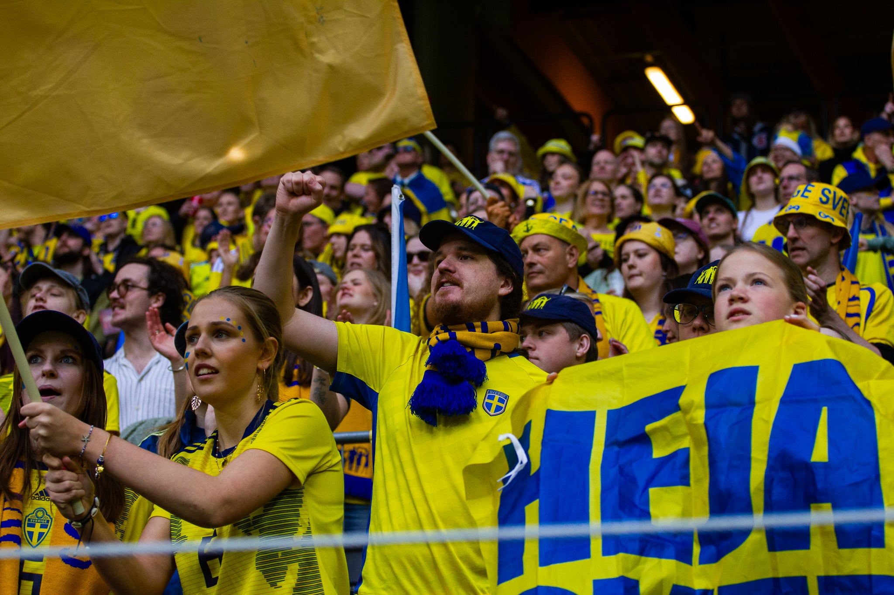

Gyökeres skjuter Sverige till grupp A!

Sverige ställdes lördagen 14 november mot Bosnien inför ett nästintill fullsatt Strawberry Arena, med ett otroligt Bosniskt bortafölje. Sverige fick trotts detta en drömstart på matchen när Anthony Elanga slog in bollen mot Daniel Svensson, som nickade in 1–0 redan efter fem minuter. Målet var Svenssons första i landslagströjan. Därefter blev det Gyökeres show. Sverige fortsatte att anfalla och Viktor Gyökeres vann själv en straff som han sedan säkert satte i mål. Gyökeres spelade även fram Alexander Isak till 3–0, men målet vinkades av för offside. Sverige skulle även utöka ledningen till 3–0 precis innan pausvilan. På stopptid vann Daniel Svensson denna gång en straff, som Gyökeres bombade in. Därmed gjorde han sitt andra mål för kvällen och har nu gjort 27 mål på 42 landskamper, varav 16 mål på 16 matcher i Nations League. Sverige gick till halvtidsvilan med en 3–0-ledning, men matchen var långt ifrån över. Bara två minuter efter att den italienska domaren blåst igång den andra halvleken nickade den svenskfödde bosniern Armin Gigovic in 3–1. Drygt en timme in i matchen reducerade Bosnien ännu en gång. Denna gång var det lagkaptenen Sead Kolasinac som nickade in 3–2. Under den sista halvtimmen tog Bosnien över spelet helt och hållet. Målvakten Viktor Johansson stod dock för flera svettiga räddningar och höll Sverige kvar i matchen Dejan Kulusevski gjorde även comeback efter närmare två års skadefrånvaro, vilket blev ytterligare ett glädjeämne för Sverige. Sverige höll undan och matchen slutade 3–2. Segern innebär att Sverige vinner sin grupp i Nations League B och därmed avancerar till Nations League A. Det innebär tuffare motstånd framöver, men också en bättre seedning inför kommande mästerskap, EM 2028.